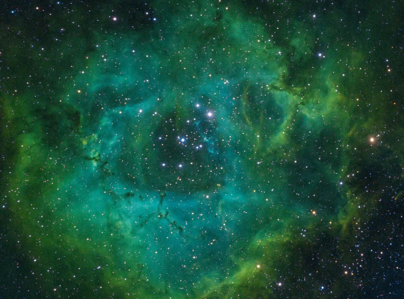

2005 April 29

Explanation:
Two extremely bright stars illuminate a greenish mist in this and other images from the new GLIMPSE360 survey. This fog is comprised of hydrogen and carbon compounds called polycyclic aromatic hydrocarbons (PAHs), which are found right here on Earth in sooty vehicle exhaust and on charred grills. In space, PAHs form in the dark clouds that give rise to stars. These molecules provide astronomers a way to visualize the peripheries of gas clouds and study their structures in great detail. PAHs are not actually "green;" a representative color coding in these images lets scientists observe PAHs glow in the infrared light that Spitzer sees, and which is invisible to us.
Strange streaks - likely dust grains that lined up with magnetic fields - distort the star in the top left. The fairly close, well-studied star GL 490 gleams in the middle right. The new GLIMPSE360 observations have revealed several small blobby outflows of gas from nearby forming stars, which indicate their youth. Such outflows are a great way to target really young, massive stars in their very earliest, hard-to-catch stages.
This image is a combination of data from Spitzer and the Two Micron All Sky Survey (2MASS). The Spitzer data was taken after Spitzer's liquid coolant ran dry in May 2009, marking the beginning of its "warm" mission. Light from Spitzer's remaining infrared channels at 3.6 and 4.5 microns has been represented in green and red, respectively. 2MASS 2.2 micron light is blue.
Today, Malu was also born, aka Dadatops CEO, feirinha addicted, Jão biggest fan. Anyway this was all just to wish you congratulations Malu, so... congratulations Malu :)
Warnig: This is not a official website. Made for educational purposes only